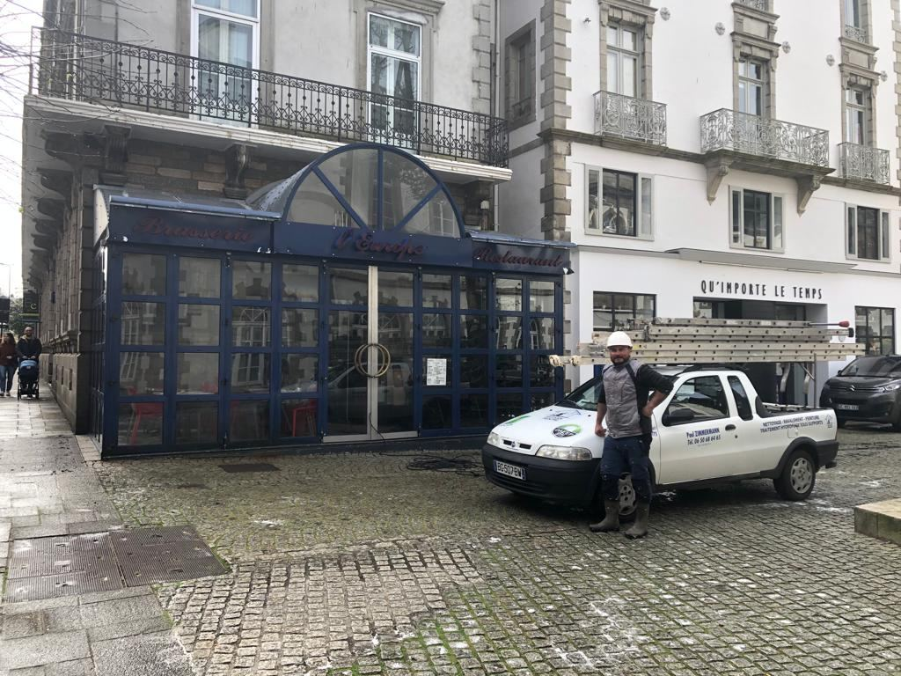
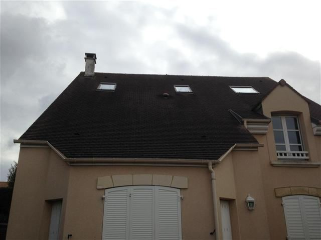
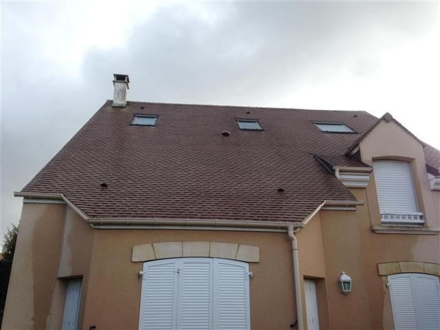
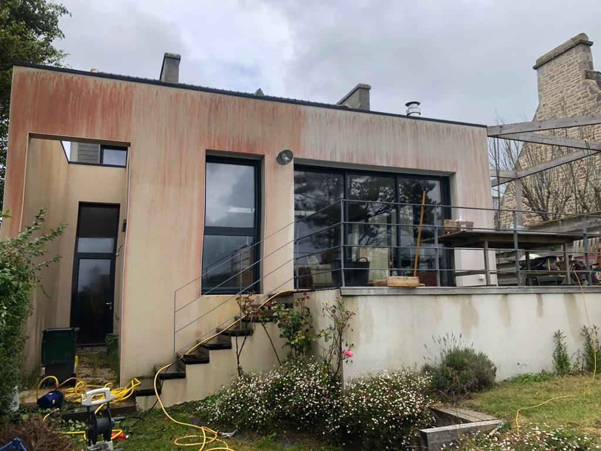
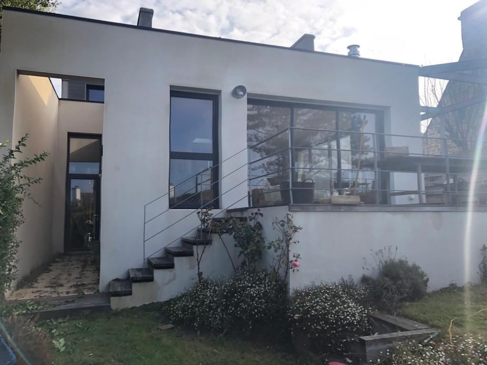
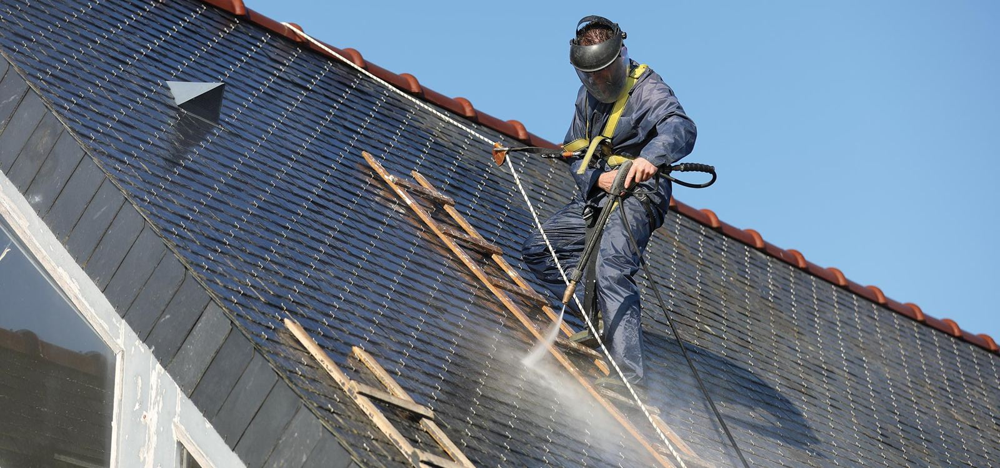
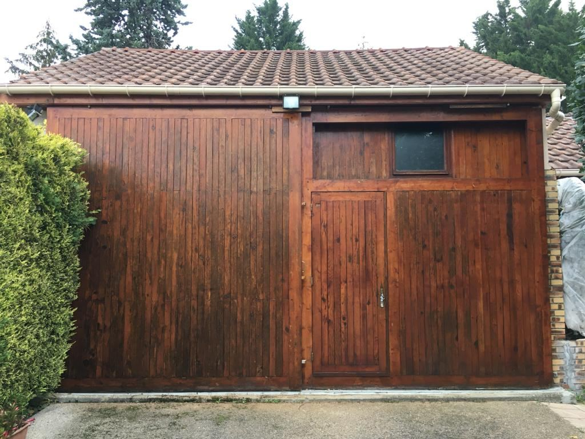
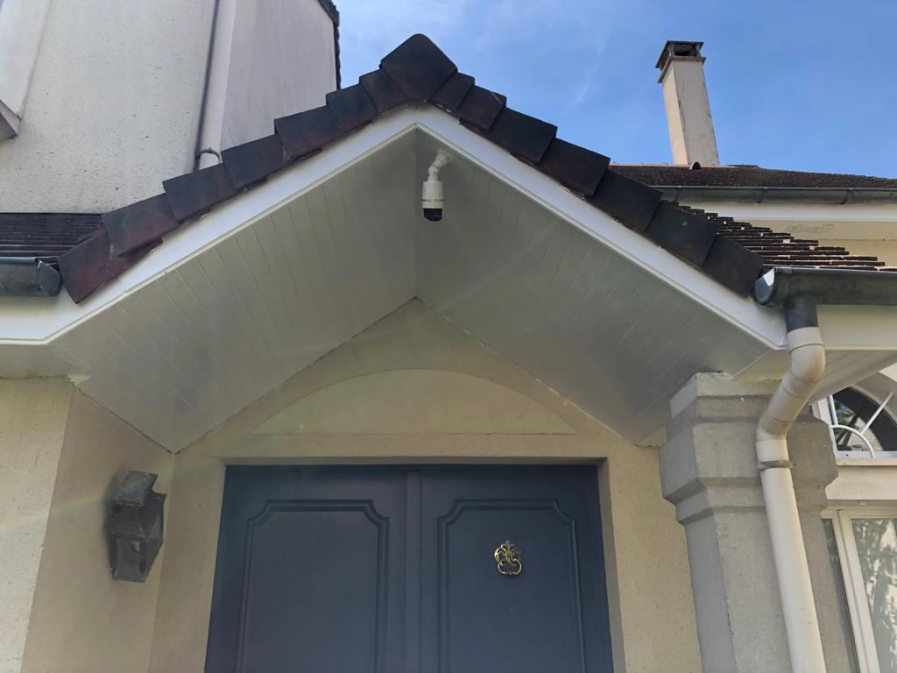

Couvreur · Morlaix, Saint-Pol-de-Léon, Landivisiau, Carantec
Couvreur à Morlaix, toit et façade.
Paul répare, nettoie et protège les toitures autour de Morlaix, et il ravale les façades. Il passe, il regarde, et il vous dit ce qui doit être fait et ce qui peut attendre.
Appeler Paul · 06 50 68 64 65Ses chantiers, avant et après.
Des chantiers de Paul, photographiés avant et après son passage. Pas d’image de catalogue.

Avant
Après
Avant
Après
Un toit ne lâche pas d’un coup. Il prévient.
Presque toutes les grosses réfections commencent par de la mousse qu’on a laissée pousser ou trois tuiles que personne n’a fait remettre.
Tant que le support est sain, on nettoie, on traite, on remplace élément par élément. Quand l’eau a eu le temps de travailler, le chantier change de taille. Un passage au bon moment coûte toujours moins cher.
Faire regarder mon toitComment ça se passe
- Paul vous rappelle lui-même, du lundi au samedi, pas un standard.
- Il passe voir le toit et regarde l’état réel des tuiles ou des ardoises. C’est gratuit.
- Vous recevez un devis écrit, détaillé poste par poste.
- Vous décidez. Rien n’est engagé tant que rien n’est signé.

Combien ça coûte ? Ça dépend de ce qu’il trouve.
Un démoussage, trois tuiles ou une façade entière, ce ne sont pas les mêmes chantiers. Un chiffre donné au téléphone serait de la devinette.
Le devis est gratuit, écrit, détaillé poste par poste. Rien ne s’ajoute en cours de chantier sans votre accord.
Ce qui fait varier le prix
- La surface et la pente du toit
- Le matériau : ardoise ou tuile
- L’accès : échelle, échafaudage ou nacelle
- Les éléments à remplacer
- Le traitement ou la finition choisie
- Les gouttières et le faîtage
Il intervient à 30 km autour de Morlaix.
Du Léon au Trégor, de Roscoff à Plestin-les-Grèves, de Carantec aux monts d’Arrée. Au-delà, demandez : il se déplace aussi plus loin selon le chantier.
- Morlaixsur place
- Saint-Martin-des-Champs2 km
- Plourin-lès-Morlaix6 km
- Taulé6 km
- Plouigneau8 km
- Pleyber-Christ8 km
- Plouezoc’h8 km
- Plougonven10 km
- Saint-Thégonnec11 km
- Lanmeur11 km
- Plougasnou11 km
- Guiclan11 km
- Carantec12 km
- Plouénan13 km
- Plouvorn14 km
- Saint-Pol-de-Léon16 km
- Locquirec17 km
- Plestin-les-Grèves17 km
- Landivisiau18 km
- Roscoff19 km
- Santec21 km
- Cléder23 km
- Sizun25 km
- Plouescat28 km
Distances à vol d’oiseau depuis Morlaix. Votre commune n’y est pas ? Un appel suffit pour savoir si le déplacement est possible.

Les questions qu’on lui pose
Le devis est-il gratuit ?
Que faites-vous exactement ?
Qui vient sur le chantier ?
Êtes-vous assuré ?
Quelle TVA s’applique ?
Un appel suffit pour savoir où en est votre maison.
Décrivez ce que vous voyez : il vous dira si ça peut attendre, ce que ça implique, et ce que ça coûte.